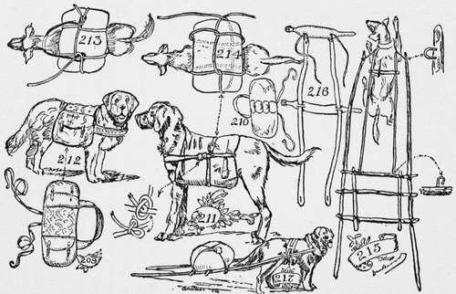

A Dog Travois
Description
This section is from the book "The Book Of Camp-Lore And Woodcraft", by Dan Beard. Also available from Amazon: The Book of Camp-Lore and Woodcraft.
A Dog Travois
Can also be used at times with advantage, as it was used by our red brothers of the wilderness. Fig. 217 shows a dog harnessed to a travois, made of two shaft poles; the harness consists of a padded collar similar to those used in Northern Quebec for sled dogs, and a cincha of leather or canvas and traces of rope or thong. Figs. 215 and 216 show a rig made by one of my Boy Scouts; the material used was the green saplings cut in the woods, the traces were made of rope manufactured from the roots of the tamarack tree, so also was the cord used to bind the parts of the frame together. The hooks to which the traces were fastened were made of wire nails bent over, and the staples to which the collar was fastened by thongs to the shaft were made of wire nails, the heads of which were ground off by rubbing them on stones; the nails were then bent into the proper curve and driven into the shaft in the form of a staple. Fig. 216 shows the same rig with a leather harness. The American Indian used the travois on dogs the same as they did upon horses and the sudden appearance of game often produced a stampede of dog travoises, scattering the duffel, including papooses, loaded on the travois.
It is not expected that the reader will make every one of these contrivances, but if he does he will learn How, and to be a good woodsman he should know how, so as to be prepared for any emergency. It is possible to make the whole pack for the dog from birch bark, but however it is made, if it serves the purpose of making the dog carry part of the pack, when you put the bark on the dog's back, you will teach the animal that there are two kinds of barks; one of which is useful as a duffel bag, and the other as an alarm.
In Alaska and other parts of the far North, as well as in Holland and other parts of Europe, the dog is generally used as a beast of burden; it draws sleds in North America and milk carts and market wagons in Holland, but it is not necessary for us to live in Holland or in the far North in order to make use of the dog; a good dog will cheerfully carry the packs on the trail, loyally guard the camp at night, and, if necessary, die in defense of its master.
Any uncomfortable pack is an abomination; too heavy a pack is an unhappy burden, no pack at all is fine—until you reach camp and hunt around for something to answer for a toothbrush, comb and brush, something on which to sit and sleep, something overhead to protect you from the rains and dews of heaven, something to eat and something to eat with besides your fingers, something from which to drink which holds water better than the hollow of your hand or the brim of your hat, and, in fact, all those necessary little comforts that a fellow wants on an overnight hike. Without these useful articles one will wish that he had subjected himself to the slight fatigue necessary to pack a small pack on his back.
The word "pack" itself is a joy to the outdoor man, for it is only outdoor men who use the word pack for carry, and who call a bundle or load a pack. The reason for this is that the real wilderness man, explorer, prospector, hunter, trapper or scout, packs all his duffel into a bundle which he carries on his back, in two small saddle-bags which are carried by his husky dogs, or a number of well-balanced bundles which are lashed on the pack saddle with a diamond hitch over the back of a pack horse.
You see we have pack dogs, pack horses and pack animals, pack saddles and packers, as well as the packs themselves, which the packers pack and these animals pack on their backs, or which the man himself packs on his own back. Then we also have the pack rat, but the pack rat does not carry things with our consent. The pack rat comes flippity-flop, hopping over the ground from the old hermit, Bill Jones's, packing with him Bill Jones's false teeth which he has abstracted from the tin cup of water at the head of Bill Jones's bunk. The pack rat deposits the teeth at the head of your cot, then deftly picking up your watch, the rat packs it back to Bill Jones's cot and drops it in the tin cup of water, where it soaks until morning.
It is easy to see that however funny the pack rat may be, and however useful he might be to the Sunday comic paper, the rat's humor is not appreciated by the campers in the Rocky Mountains, where it is called a pack rat from its habit of carrying things. Thus it is that in a newly settled country the word "carry" is almost forgotten; one "packs" a letter to the post box, or packs a horse to water, or packs a box of candy to his best girl, or a pail of water from the spring.
Continue to: